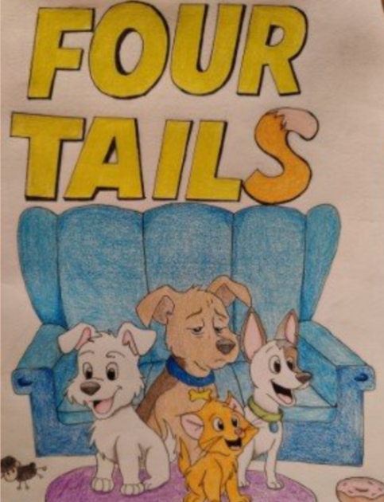
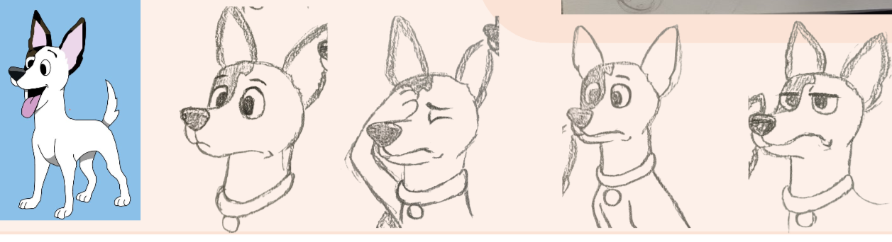

2D Animation
Four Tails
In a group project I helped to create different scenes in an animated short. To do this I learnt how to do 2D animation in Blender in my own time. I helped with character design, background designs, and planning.
Learning the new software was a challenge and lecturers advised using different softwares or methods but once I had my heart set on using Blender there was no changing my mind.
The process
Planning
For this group project we had full creative freedom to create whatever we liked. Me and 2 others came together to find a common interest we all shared and we ended up on the topic of childhood cartoons and our pets. From this we ultimatly decided that we wanted to create a short animation based on our pets. To do this we divided the work so that myself and one other would do the animations and the other member of our group done the audio.

My role
What I was responsible for
My role in this project was to help in the research aspect and putting together our process book and mirro board. I was also in charge of creating and designing the backgrounds for all of our scenes and designing and animating my pet in the first few scenes. I also created a physical copy of the comic as a prototype.

Reflection
What I learned
As there was a lot of "learn as you go" involved in this project due to learning how to use Blender independently there were a lot of set backs and regrouping. Once a week we would check up on where everyone was at and how they were managing with their workload and if we ran into complications we quickly came up with new plans. I enjoyed learning how to use Blender alone as it gave the project that much more of an independent feel as opposed to being told what to do step by step.
